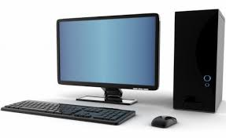

Computers and computing devices have become very familiar to us over the past few years, for some of us it may be impossible to spend a day without using technology. These devices that we use everyday may look very different than their counter parts (ie. a Laptop and a Desktop) but despite their looks they all share the basic hardware that goes into a computer.All computers have some sort of keyboard for user inputs aswell as a mouse and some sort of screen. These are some of the basics that we use to control a computer, but as seen in the image a dekstop computer is way bigger than a laptop, however, the hardware inside is basically the same and serves the same purpose.
All computers, no matter for what purpose they were made, compute at least some type of data. This data ranges from videos you watch on websites like YouTube, or the sentences you type on Google Docs. All of this data is processed by the computer and outputted to where it needs to go. A computer needs to have basic common parts that help it perform these tasks. The common basic hardware found in computers can be found in the list below, and more info can be found out about each part by navigating through the navigation bar at the top.